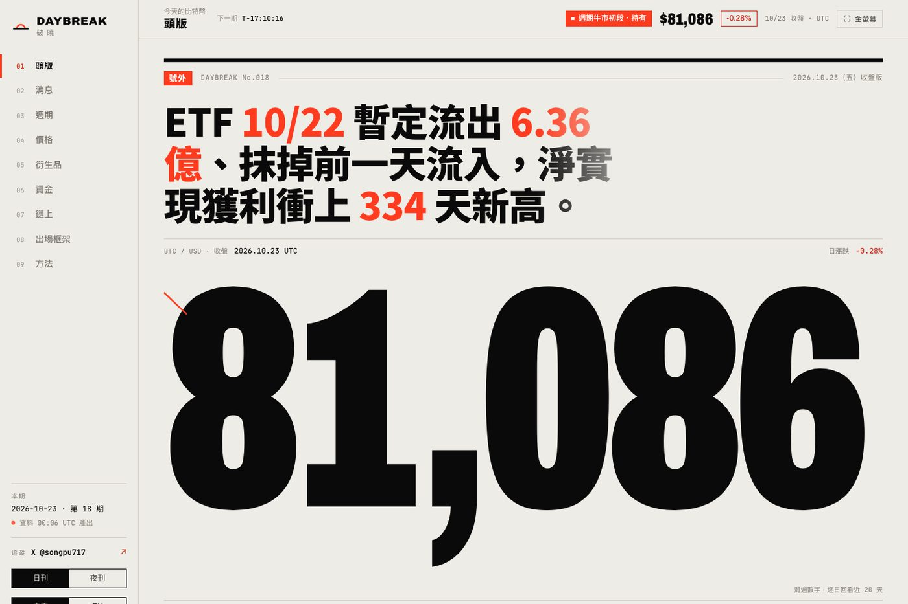
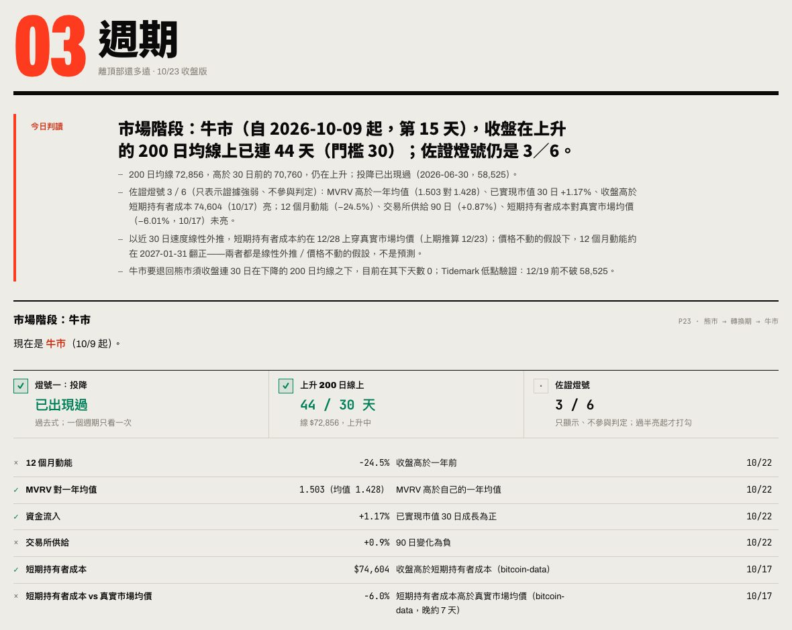
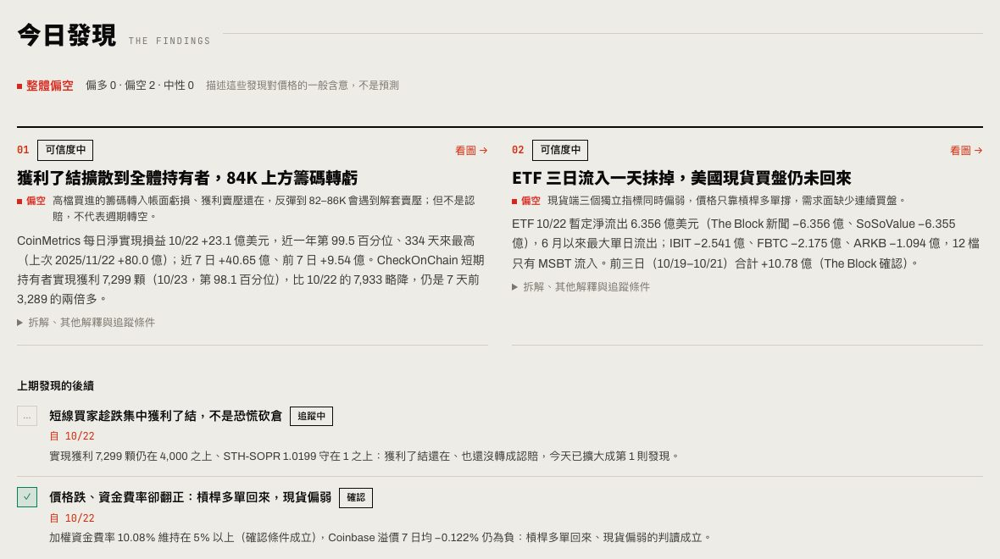

核心設計
AI 寫判讀，但不碰數字
- 情境
- 讓模型直接看原始資料寫日報很快，但數字可能被改寫、捏造，或混用不同口徑。
- 決定
- 數字只由管線產生；AI 只讀約 20KB 的精簡摘要，所有數字都要能在摘要裡找到。規則寫成一份任務文件，提交前由 notes_lint.py 檢查格式、數量、長度、英文版沒有中文、制式提醒句全期最多 4 次。
- 取捨
- 文字彈性變小，換來可審計：每句判讀都能追到資料欄位。品質靠規則和檢查器維持，不靠每天人工審稿。
把 15 個免費資料源，變成每天台北 08:30 出刊、會自己追蹤對錯的比特幣簡報。
產品負責人（個人專案）
問題定義、規則設計、資料策略、AI 編輯流程與品質標準
Claude Code 實作
Claude 排程任務每日撰寫判讀；GitHub Actions 跑資料管線
靜態網站 + PWA
GitHub Pages、中文／英文、日刊／夜刊、可加到手機主畫面

長期持有者要在週期頂部前分批賣出，但鏈上、ETF、衍生品數據散在十幾個網站，每個數字都沒有「所以呢」，最需要紀律的時候最容易被情緒帶走。
程式產生數字，AI 只負責解釋，出場規則寫死、每月才檢討。每天自動出刊，再用「今日發現」把注意力集中到不尋常的地方，並在下一期檢查自己說得對不對。
18 期連續出刊，全程用免費 API；每天人工只剩一步（發 X 貼文）。發現有可驗證的追蹤條件，第一批已在隔天得到「確認」或「追蹤中」的結果。
目標使用者是手上有比特幣、打算在這一輪週期分批賣出的長期持有者。第一位使用者是我自己。
這五條寫在 README 和每日任務的規則裡，後面所有取捨都回到它們。
每一版最上方是「今日判讀」，一句話說這一版今天最值得注意的事，數字放在後面當證據。
來源失敗只影響那一項，頁面照實標示，絕不沿用昨天的數字。頁首的資料狀態列出每個來源落後幾天。
CoinMetrics 和 bitcoin-data 的 MVRV 口徑不同，混算會產生看起來精確、實際錯誤的結論。
引用歷史一律寫出樣本數，少於 30 不下結論。比特幣只有 3 到 4 輪週期，所有「遞減」推論都標明假設。
市場階段、數字解讀、新聞、第三方模型都只作參考，不能改變出場框架。規則參數每月檢討時才改。

最重要的架構決定，是讓 AI 只負責「解釋」，不負責「算」，也不負責「決定」。
Python 管線抓 15 個來源、計算指標、偵測異動、封存前一期。同樣的輸入永遠得到同樣的輸出。
讀精簡摘要、查證新聞與研報，寫中英文頭條、各版判讀和今日發現。不改任何數字，也不改網站程式。
出場框架：8 階價格階梯、鏈上觸發、頂部加速、200 日均線避險、時間停損。只有每月檢討時才改。
| 台北時間 | 誰 | 做什麼 |
|---|---|---|
| 06:40 | Actions | 預先抓 7 個鏈上指標，把免費層每天 15 次的額度分成兩批用。 |
| 08:06 | Actions | 抓全部資料、算指標、跑異動偵測、封存前一期、發布到網站。 |
| 08:30 | Claude | 讀摘要、查證新聞與研報，寫中英文判讀與發現；格式檢查與隱私掃描通過才提交。 |
| 08:3x | Actions | 產生中英文分享圖；X 貼文草稿推播到手機。 |
| 22:00 | Actions | 補抓前一個交易日的 ETF 流量（來源約晚一天公布）。 |
上線兩週後的觀察：讀者自己看得到數字，看不到的是「哪裡不尋常、為什麼、接下來看什麼」。
前 16 期的日報是「每個版面一段判讀」。資訊完整，但重點平均分配，真正異常的訊號會被淹沒在 9 個版面裡。10/23 上線的「今日發現」改成先找異常、再寫判斷，並讓每個判斷都能在下一期被檢驗。
26 條序列套固定規則：一年 2% 極端值、7 日急變、狀態翻轉、關鍵價位 ±3%、連續、跨指標組合。
signals.py拆解是哪一邊在動、交叉比對、列出其他解釋、引用過去同樣情況與樣本數。
Claude例如「實現獲利回到 4,000 顆以下」，附期限，並標明成立時代表確認或推翻。
Claude管線讀上期條件，用今天的數字判斷成立與否。
signals.py確認、推翻、到期或追蹤中。結果寫進往期索引。
Claude↺ 第 5 步的結果成為下一期第 1 步的輸入

數量上限 3 則，可以是 0。同一件事的多個訊號合成一則；連續多天的異常只有出現新發展才再寫，否則放進後續。
每則發現都寫出會推翻自己的條件，系統隔天自動對答案。累積下來，就能算出發現的確認率，評估判讀品質。
先解決「每天有一份正確的數字」，再談解讀。
掛單簿從 3 家擴大到 13 個交易所（10/06），加入第三方頂底模型讀值。
請求輪替、ETF 換源、手機滑動換版、資產版本號。
牛市需投降出現過，加上在上升的 200 日均線上連 30 天；加入佐證燈號。
依固定門檻自動產生「現在代表什麼」，標上偏多／偏空／留意／中性。PR 自動檢查上線。
中英文分享圖、每日 X 草稿、發文小幫手、無 cookie 的訪客統計。
「現在」一句自動產生，「怎麼讀」說明要小心什麼；虛線一律代表推測。11 項鏈上指標補上 3 年走勢。
發現後見之明偏誤，改用即時測試，結論反轉並公開更正。
修正預抓排程、鯨魚面板暫停、每日任務規則依版面重整。
從「每版一段判讀」轉向「先找異常、再寫可檢驗的判斷」。
內容每天自動產生，分發也要接近零成本：圖自動畫，文案自動寫，人只按發送。


AI 寫完日報後另寫中英文 X 貼文，用 x_len.py 確認在 280 字內，推播到手機。發文小幫手一鍵複製、存圖、開 X 發文視窗。
短影片與貼文不放出場框架、觸發條數或「今天不動」之類的動作結論。社群負責帶人進來，判斷框架留在網站裡完整說明。
GoatCounter 不用 cookie，只在正式網址計數；X 連結帶 utm_source=x，分得出社群帶來的流量。
| 風險 | 對策 |
|---|---|
| 公開倉庫洩漏個人資訊 | 隱私鐵則列為最高優先：不得出現任何人的實際持倉或金額，出場框架只用百分比；每次提交前掃描。 |
| AI 捏造或誤植數字 | 只讀摘要、不改數字；格式與數量由檢查器把關，沒過就不能提交。 |
| 讀值被誤會成買賣訊號 | 標籤只描述「對價格的一般含意」；與自動解讀方向不同時必須寫出原因。 |
| 資料延遲或失敗 | 頁首資料狀態列出每個來源的日期與落後天數；失敗的項目顯示「本日未取得」。 |
| 改版弄壞網站 | 每個 PR 檢查語法、英文字典、版本號，並渲染每一版的中英文 × 桌面手機。 |
產品上線約兩週，流量統計已經埋好但樣本還小，這裡先列出我會用來判斷成敗的指標。
| 指標 | 定義 | 現況 |
|---|---|---|
| 北極星 | 每天開啟日報的回訪讀者數 | 已埋點，累積中 |
| 準時率 | 08:30 前資料與判讀都已更新的天數比例 | 18 期連續出刊 |
| 資料完整度 | 每期「本日未取得」的項目數 | 頁首每天顯示 |
| 判讀品質 | 發現到期時「確認」對「推翻」的比例 | 10/22 起累積，首批 1 確認、1 追蹤中 |
| 分發效率 | 帶 utm_source=x 的造訪占比 | 已埋點，累積中 |
每期已自動封存頭條、當天收盤、之後漲跌與價位有沒有被碰到。10/12 決定先只封存，等資料夠多再設計成可回顧的頁面。
把確認率放到網站上，讓讀者自己判斷這份簡報值不值得信。
找到不擋自動抓取的地址分層資料，再回補暫停中的面板。
每日任務的指示有 160 多行，寫清楚格式、數量、禁止事項和每一版要怎麼寫。品質問題出現時，修的是規則和檢查器，不是當天的那段文字，所以同樣的錯不會再犯。
「本日未取得」、樣本數、虛線代表推測、公開更正回測，每一項單看都讓產品顯得不那麼厲害，放在一起才讓讀者願意相信剩下的數字。
前兩週大部分的工作是資料來源、排程與額度。準時、正確的基礎打好之後，「今日發現」這種需要判斷力的功能才有意義。